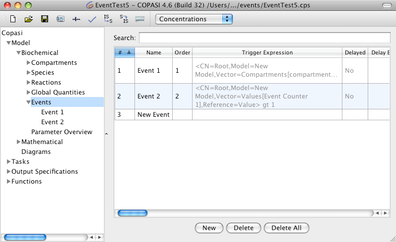
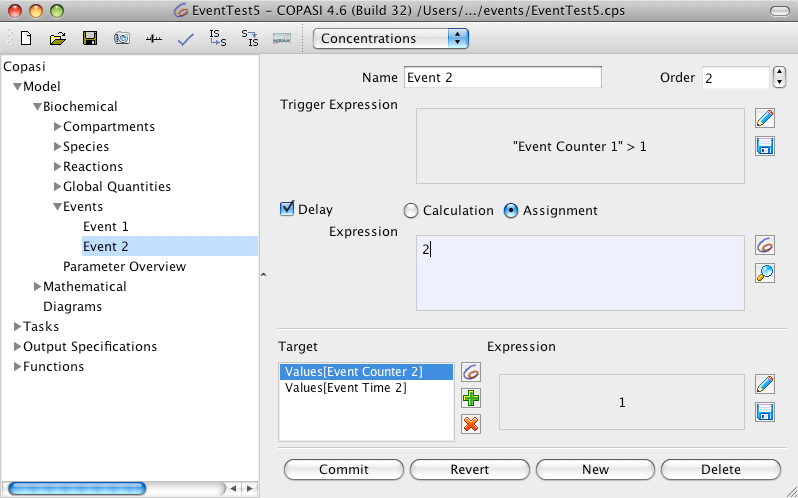

An event, which can be viewed as discrete conditional state transition of the model, consist of two required parts: a trigger, which causes the event, and at least one assignment, which modifies the model. If an event has multiple assignments, they will be carried out simultaneously, i.e., independent from the order in which they are defined. In addition, an event may include an optional time delay, which determines the model time COPASI will wait after detecting an event and the execution of the assignments.
Trigger
An event trigger is a Boolean expression. The exact moment at which the expression value changes from FALSE to TRUE is the time point when the event is fired. The Boolean expression may not use any of the random functions (uniform() and normal()) which COPASI provides.
Assignment
An event assignment has two components an expression and a target. All assignments associated with a single event are executed as one unit. This means further updates and checking for new events is done only after all assignments for a single event are carried out. To carry out an assignment means that the expression is evaluated and its value assigned to the target.
Delay
An event delay, which is optional is the time interval between the firing of an event and the execution of the event assignments. A delay can be inserted in two places:
- between firing and calculation of the target expression (Delay Calculation)
- between calculation of the target expression and the assignment to the target object (Delay Assignment)
In the model tree right below the Global Quantities branch is the Events branch. If you select this branch, you see a table with all the events that have been defined in your model. When you start a new model this table is empty. The search field allows you to specify a filter for the displayed events. The table will only show events for which the filter expression is matched in any of the columns. This will allow you to search for event names or event targets.
|  |
| Event Table with 2 Entries |
If you click on the name of an event in the tree on the left or double click on a row of the table the detailed information correlated with the chosen event will be displayed.
|  |
| Detailed Event with 2 Assignments and Delay |
In this single event screen you are able to specify the Boolean trigger expression, the optional delay, and multiple event targets. When adding an event target COPASI will allow you to only select values which are not determined by assignments as this would lead to conflicts.
For each of the mathematical expressions, which are the trigger, delay, and assignment expressions, that can be specified for an event you may use the same components, which are used to create function definitions. For a detailed description of these elements see
User Defined Functions. You may additionally reference values of other model entities within mathematical expressions, the appropriate values can be selected by pressing the button with the COPASI icon.
Warning: COPASI currently does not support simultaneous assignments caused by different events. We plan to implement this in future releases.